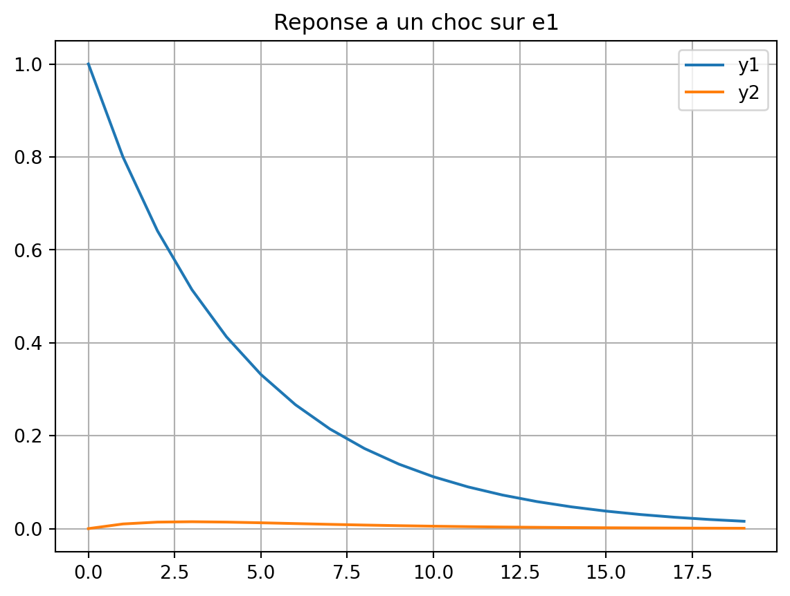
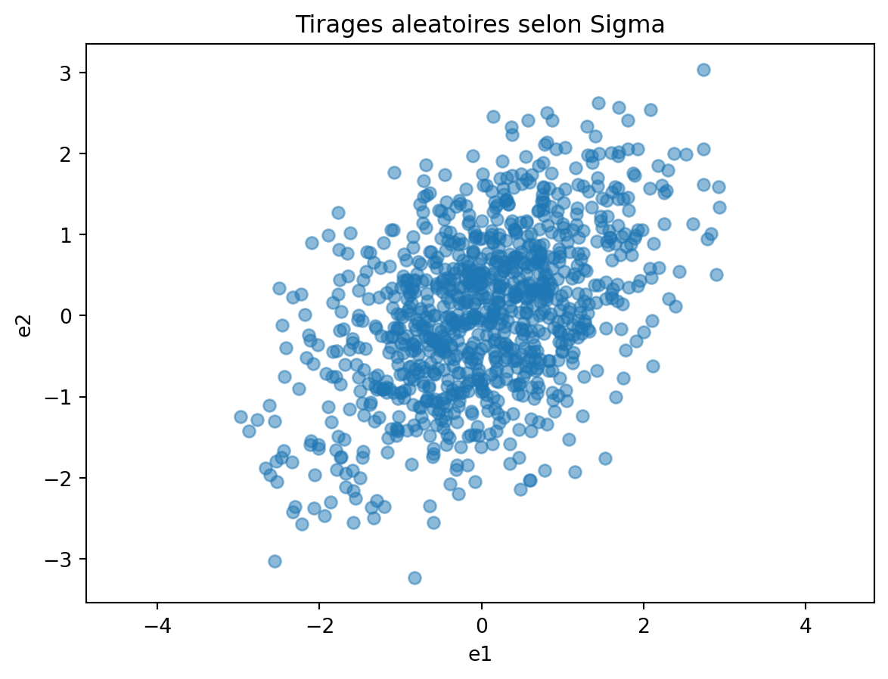
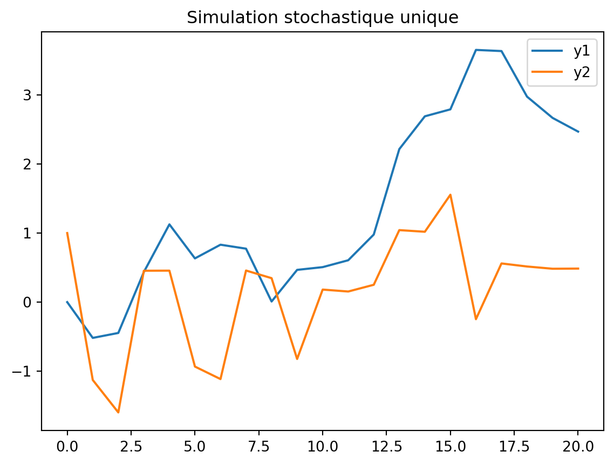
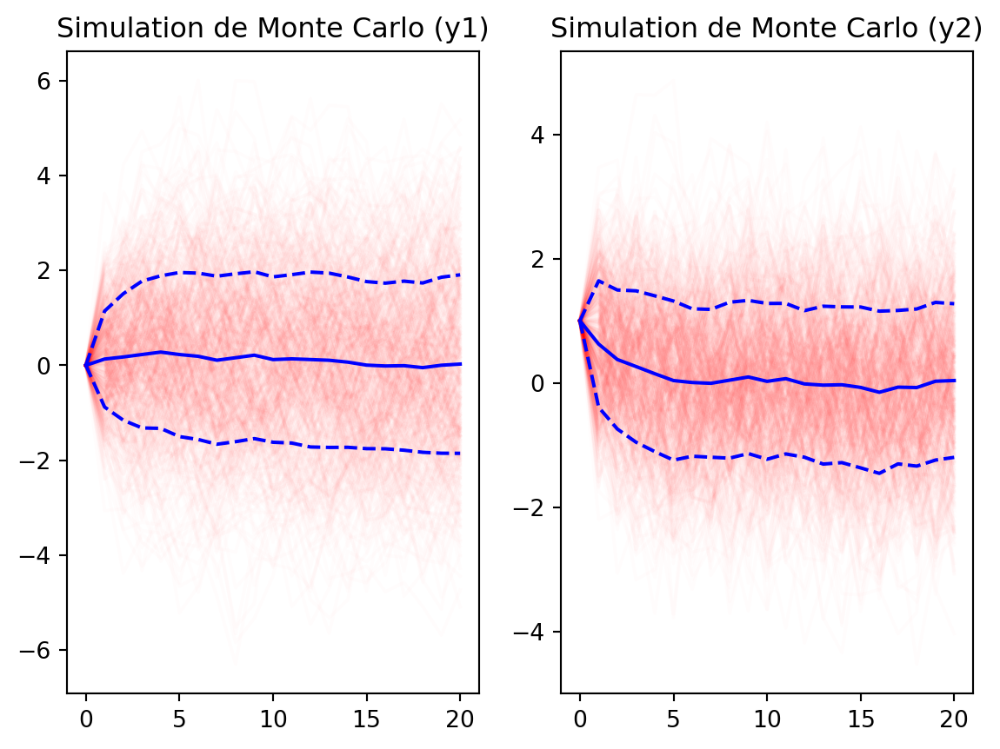
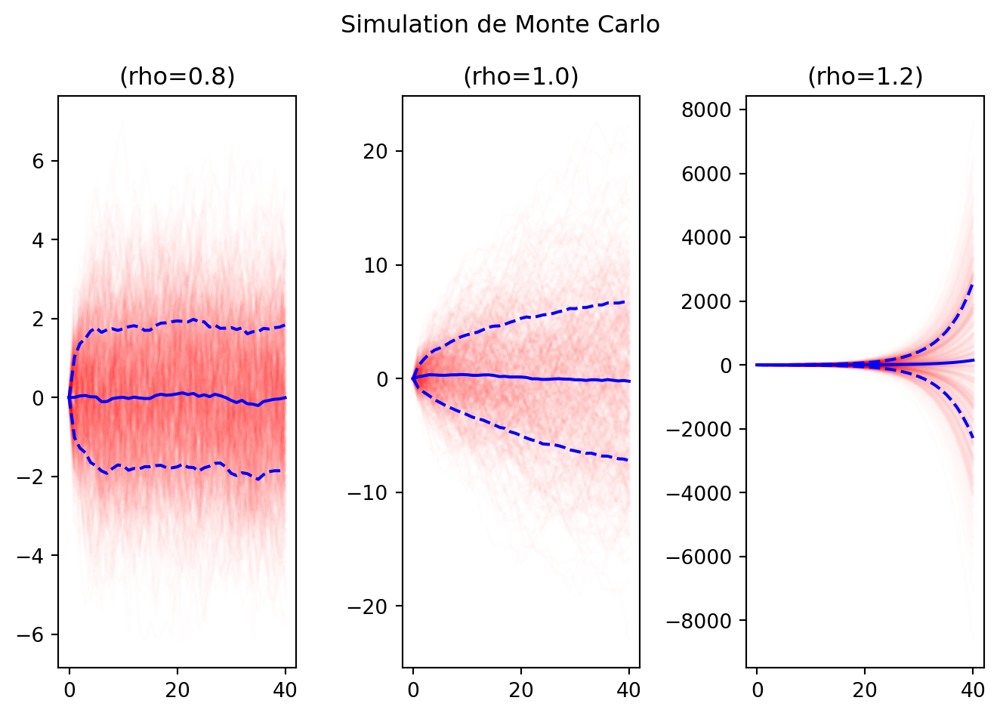

Code
# nombres (operations usuelles)
(1.0+(2.0+3.0*(4.0+5.0)))/301.0Cycles et fluctuations - AE2E6
Si vous n’avez jamais utilisé Python, on recommande de suivre l’introduction de Quantecon. Sinon, voici un bref rappel des bases de Python.
# nombres (operations usuelles)
(1.0+(2.0+3.0*(4.0+5.0)))/301.0# les puissances s'ecrivent avec **
2**8256# affectation de variable
x = 10# Les noms de variables peuvent contenir des caracteres Unicode
# Python 3 prend en charge les noms de variables Unicode
a = 20
σ = 34
ϵ = 1e-4# comparaison
2 == 3False3 <= 3True# Les chaines peuvent aussi contenir des caracteres Unicode
fancy_str = "α est une chaine" # les guillemets simples ou doubles fonctionnent
'c' 'c'# interpolation de chaines (f-strings)
he_who_must_not_be_named = "Voldemort"
f"Bienvenue {he_who_must_not_be_named}!" 'Bienvenue Voldemort!'# interpolation de chaines
n = 1999999
print(f"Iteration {n} toujours en cours...")Iteration 1999999 toujours en cours...import numpy as np# listes Python (conteneurs generiques)
v_list = [1, 2, 3]# tableaux NumPy (vecteurs/matrices)
v = np.array([1, 2, 3])
varray([1, 2, 3])# matrices
M = np.array([[1, 2, 3], [4, 5, 6], [7, 8, 9]])
Marray([[1, 2, 3],
[4, 5, 6],
[7, 8, 9]])# multiplication matricielle
M @ varray([14, 32, 50])# les listes sont mutables
x = ["One"]
x.append("Two")
x.append("Three")
x.append("Four")
x.append("Five")
x['One', 'Two', 'Three', 'Four', 'Five']# acces aux elements d'un vecteur (indexation a partir de 0)
v[0]np.int64(1)# acces aux elements d'une matrice
M[0, 1]np.int64(2)En Python, l’indexation commence a 0. Le premier element d’une collection est note 0.
# decouper des matrices (slicing)
print(M)
# garder la premiere ligne
print("Premiere ligne")
print(M[0, :])
# garder la deuxieme colonne
print("Deuxieme colonne")
print(M[:, 1])
# extraire une sous-matrice
print(M[0:2, 0:2])[[1 2 3]
[4 5 6]
[7 8 9]]
Premiere ligne
[1 2 3]
Deuxieme colonne
[2 5 8]
[[1 2]
[4 5]]# concatener des vecteurs (sequence)
np.concatenate(([1, 2], [3, 4]))array([1, 2, 3, 4])# concatener des vecteurs (empilement horizontal)
np.hstack(([1, 2], [3, 4]))array([1, 2, 3, 4])# transposer une matrice
np.array([[1, 2], [3, 4]]).Tarray([[1, 3],
[2, 4]])# les tuples peuvent contenir des donnees heterogenes
t = ("This", "is", 1, "tuple")# acces aux elements d'un tuple (indexation a partir de 0)
t[2]1# les tuples sont immuables
# Le code suivant doit lever une exception
try:
t[0] = "That"
except Exception as e:
print(e)'tuple' object does not support item assignment# boucle sur n'importe quel iterable
for i in range(1, 6): # de 1 a 5 (6 est exclu)
print(f"Iteration {i}")Iteration 1
Iteration 2
Iteration 3
Iteration 4
Iteration 5def f(x):
return x**2
f(10)100import matplotlib.pyplot as plt
# %matplotlib inline
# (pas strictement necessaire dans les notebooks modernes mais utile pour la compatibilite)x = np.linspace(0, 10, 100)
y = np.sin(x)
plt.plot(x, y)
plt.title("Un graphique simple")
plt.show()
Considerons le processus VAR(1) suivant :
\[ y_t = A y_{t-1} + B \epsilon_t \]
ou \(\epsilon_t \sim \mathcal{N}(0, \Sigma)\).
On suppose : \[ A = \begin{pmatrix} 0.8 & 0.1 \\ 0.01 & 0.6 \end{pmatrix} \] \[ B = \begin{pmatrix} 1 & 0 \\ 0 & 1 \end{pmatrix} \] \[\Sigma = \begin{pmatrix} 1 & 0.5 \\ 0.5 & 1 \end{pmatrix} \]
import numpy as np
import matplotlib.pyplot as plt
A = np.array([[0.8, 0.1], [0.01, 0.6]])
B = np.eye(2)
Sigma = np.array([[1.0, 0.5], [0.5, 1.0]])eigvals = np.linalg.eigvals(A)
eigvalsarray([0.80488088, 0.59511912])if np.all(np.abs(eigvals) < 1):
print("Le processus est stationnaire")
else:
print("Le processus n'est PAS stationnaire")Le processus est stationnaireCalculer la reponse de \(y_t\) a un choc \(\epsilon_0 = [1, 0]'\) (et \(\epsilon_t = 0\) pour \(t > 0\)). Faire un graphique de la reponse de \(y_1\) et \(y_2\) au choc initial.
T = 20
y = np.zeros((2, T))
epsilon = np.array([1, 0])
# Choc initial
y[:, 0] = B @ epsilon
# Propagation
for t in range(1, T):
y[:, t] = A @ y[:, t-1]
# Graphique
plt.figure()
plt.plot(y[0, :], label='y1')
plt.plot(y[1, :], label='y2')
plt.grid()
plt.legend()
plt.title("Reponse a un choc sur e1")
plt.show()
Importer scipy.stats et trouver comment faire des tirages dans une loi normale multivariée.
from scipy.stats import multivariate_normal
Sigma = np.array([[1.0, 0.5], [0.5, 1.0]])
dist = multivariate_normal(mean=[0, 0], cov=Sigma)
# Tirages aleatoires
random_points = dist.rvs(size=1000)# On peut visualiser les tirages aleatoires avec un scatter plot
plt.scatter(random_points[:, 0], random_points[:, 1], alpha=0.5)
plt.axis('equal')
plt.xlabel('e1')
plt.ylabel('e2')
plt.title("Tirages aleatoires selon Sigma")
plt.show()
Pour simuler la trajectoire stochastique, vous pouvez utiliser la fonction suivante.
def simulate(A, B, Sigma, e0=None, T=20):
"""
Simule une trajectoire de y_t = A y_{t-1} + B e_t avec e_t ~ N(0, Sigma).
Arguments:
- A, B: matrices du processus VAR(1)
- Sigma: matrice de covariance des chocs
- e0: choc initial (vecteur de taille n), si None alors e0 = 0
- T: nombre de periodes a simuler
Retour:
- sim: tableau de taille (n, T+1) contenant la trajectoire simulee de y_t, avec sim[:, 0] = B @ e0
"""
n = A.shape[0]
if e0 is None:
e0 = np.zeros(n)
dist = multivariate_normal(mean=np.zeros(n), cov=Sigma)
sim = []
y_curr = B @ e0
sim.append(y_curr)
for t in range(T):
e_t = dist.rvs()
y_next = A @ y_curr + B @ e_t
sim.append(y_next)
y_curr = y_next
return np.array(sim).T # Renvoie un tableau de taille (n_vars, T+1)# on peut si on le souhaite combiner une simulation stochastique avec un choc initial non nul
e0_2 = np.array([0, 1]) # Choc sur la deuxieme variable
sim = simulate(A, B, Sigma, e0=e0_2)
plt.figure()
plt.plot(sim[0, :], label='y1')
plt.plot(sim[1, :], label='y2')
plt.legend()
plt.title("Simulation stochastique unique")
plt.show()
K = 500
sims = [simulate(A, B, Sigma, e0=e0_2) for _ in range(K)]
# Traces
plt.figure()
# Tracer les simulations individuelles (en transparence)
# Calculer moyenne et ecart-type
# sims est une liste de tableaux (2, T+1)
# On les empile
sims_arr = np.array(sims) # tenseur de taille (K, 2, T+1)
mean_path = np.mean(sims_arr, axis=0)
std_path = np.std(sims_arr, axis=0)
plt.subplot(1,2,1)
for sim in sims:
plt.plot(sim[0, :], color='red', alpha=0.01)
# Tracer la moyenne
plt.plot(mean_path[0, :], color='blue', label='Mean y1')
# Tracer les intervalles
plt.plot(mean_path[0, :] - std_path[0, :], color='blue', linestyle='--')
plt.plot(mean_path[0, :] + std_path[0, :], color='blue', linestyle='--')
plt.title("Simulation de Monte Carlo (y1)")
plt.subplot(1,2,2)
# Faire le meme graphique pour y2...
for sim in sims:
plt.plot(sim[1, :], color='red', alpha=0.01)
plt.plot(mean_path[1, :], color='blue', label='Mean y2')
plt.plot(mean_path[1, :] - std_path[1, :], color='blue', linestyle='--')
plt.plot(mean_path[1, :] + std_path[1, :], color='blue', linestyle='--')
plt.title("Simulation de Monte Carlo (y2)")
plt.show()
On voit que la distribution des \(y_t\) semble converger vers une distribution stationnaire (les trajectoires restent dans un “nuage” autour de la moyenne) de moyenne nulle et de variance finie.
La matrice de covariance \(\Omega\) verifie \(\Omega = A \Omega A' + B \Sigma B'\). Resoudre cette équation en appliquant l’itération \(\Omega_n = A \Omega_{n-1} A' + B \Sigma B'\)
def ergodic_steady_state(A, B, Sigma, N=1000, tol=1e-8):
Omega = np.zeros_like(Sigma)
for i in range(N):
Omega_next = A @ Omega @ A.T + B @ Sigma @ B.T
if np.max(np.abs(Omega_next - Omega)) < tol:
return Omega_next
Omega = Omega_next
raise ValueError("Pas de convergence")
Omega = ergodic_steady_state(A, B, Sigma)
print("Covariance ergodique :")
print(Omega)Covariance ergodique :
[[3.35443766 1.19839141]
[1.19839141 1.58549397]]# Covariance empirique issue des simulations (points finaux)
final_points = sims_arr[:, :, -1] # (K, 2)
emp_cov = np.cov(final_points.T)
print("Covariance empirique :")
print(emp_cov)Covariance empirique :
[[3.54784521 1.25551464]
[1.25551464 1.52947034]]On peut considérer la matrice:
\[ A = \begin{pmatrix} \rho & 0.1 \\ 0.0 & 0.6 \end{pmatrix} \]
pour différentes valeurs de \(\rho\) (0.8, 1.0, 1.2) et refaire les simulations stochastiques.
def simulate_and_plot(A, B, Sigma, e0=None, T=20, K=500):
sims = [simulate(A, B, Sigma, e0=e0, T=T) for _ in range(K)]
sims_arr = np.array(sims)
mean_path = np.mean(sims_arr, axis=0)
std_path = np.std(sims_arr, axis=0)
for sim in sims:
plt.plot(sim[0, :], color='red', alpha=0.01)
plt.plot(mean_path[0, :], color='blue', label='Mean y1')
plt.plot(mean_path[0, :] - std_path[0, :], color='blue', linestyle='--')
plt.plot(mean_path[0, :] + std_path[0, :], color='blue', linestyle='--')
plt.title(f"(rho={A[0, 0]})")
plt.figure()
for i, rho in enumerate([0.8, 1.0, 1.2]):
plt.subplot(1,3,i+1)
A = np.array([[rho, 0.1], [0.0, 0.6]])
simulate_and_plot(A, B, Sigma, e0=e0_2, T=40, K=500)
plt.suptitle(f"Simulation de Monte Carlo")
plt.tight_layout()
plt.show()
En inspectant les graphiques, on voit que pour \(\rho=0.8\), la distribution converge vers une distribution stationnaire (les trajectoires restent dans un “nuage” autour de la moyenne).
Pour \(\rho=1.0\), la distribution ne converge pas vers une distribution stationnaire (les trajectoires s’éloignent progressivement de la moyenne): la distribution est non stationnaire.
Pour \(\rho=1.2\), la distribution diverge rapidement (les trajectoires s’éloignent rapidement de la moyenne).
On a vu dans le cours que les modèles DSGE peuvent être linéarisés autour d’un point d’équilibre pour obtenir un système dynamique du second ordre :
\[A \mathbb{E}[ y_{t+1} ] + B y_t + C y_{t-1} + D \epsilon_t = 0\]
où A,B,C sont des matrices de taille (n, n), D une matrice de taille (n, m) et \(\epsilon_t\) un vecteur de chocs exogènes normalement distribué de moyenne nulle et de covariance \(\Sigma\), une matrice de taille (m, m).
On cherche des solutions linéaires de la forme \(y_t = X y_{t-1} + Y \epsilon_t\).
\[A X^2 + B X + C = 0\]
et
\[A X Y + B Y + D = 0\]
En remplaçant \(y_{t+1}\) par \(X y_t + Y \epsilon_{t+1}\) et \(y_t\) par \(X y_{t-1} + Y \epsilon_t\) dans l’équation du système, on obtient:
\[A \mathbb{E}[X y_t + Y \epsilon_{t+1}] + B (X y_{t-1} + Y \epsilon_t) + C y_{t-1} + D \epsilon_t = 0\]
Comme \(\epsilon_{t+1}\) est indépendant de \(y_t\) et de \(\epsilon_t\), on a \(\mathbb{E}[Y \epsilon_{t+1}] = 0\). En regroupant les termes, on obtient le système déterministe:
\[A X^2 y_{t-1} + (A X Y + B Y + D) \epsilon_t + (B X + C) y_{t-1} = 0\]
Ce qui doit être vérifié pour tout \(y_{t-1}\) et \(\epsilon_t\). En égalisant les coefficients, on obtient les deux équations matricielles demandées.
Dans la suite, on peut utiliser:
A = np.array([[1.0, 0.0], [0.0, 1.0]])
B = np.array([[-2.1, 0.0], [0.0, -2.1]])
C = np.array([[0.98, 0.0], [0.0, 0.9]])
D = np.array([[1.0], [0.5]])L’algorithme d’itération temporelle consiste à itérer la fonction \(X_{n+1}=T(X_n)\) où \(X_{n+1}\) satisfait \[A X_n X_{n+1} + B X_{n+1} + C = 0\].
À chaque itération, on doit résoudre une équation linéaire en \(X_{n+1}\) dont la solution est donnée par:
\[X_{n+1} = - (A X_n + B)^{-1} C\]
# on part d'une valeur initiale aléatoire pour X0
X0 = np.random.rand(2, 2)
for i in range(1000):
# Resoudre AX_n X_{n+1} + B X_{n+1} + C = 0 pour X_{n+1}
# Ce qui revient a resoudre une equation lineaire en X_{n+1}
X1 = np.linalg.solve(-(A @ X0 + B), C)
if np.max(np.abs(X1 - X0)) < 1e-8:
print(f"Convergence atteinte apres {i} iterations.")
break
X0 = X1Convergence atteinte apres 24 iterations.# Verifier que la solution satisfait les equations matricielles
res = A @ X1 @ X1 + B @ X1 + C
res_X = np.linalg.norm(res, ord=np.inf)
print(f"Residual equation for X: {res_X:.2e}")Residual equation for X: 6.31e-09On obtient Y en résolvant la deuxième équation matricielle, ce qui donne \(Y = - (A X + B)^{-1} D\).
Y = np.linalg.solve(-(A @ X1 + B), D)La fonction suivante calcule la solution du système matriciel du second ordre en utilisant la méthode de Schur généralisée (QZ).
Cette méthode est plus robuste que l’iteration temporelle et permet d’analyser l’ensemble des valeurs propres du système pour vérifier les conditions de stabilité.
import numpy as np
from scipy.linalg import ordqz
def solve_second_order_qz(A, B, C, D, tol=1e-10, return_eigvals=False):
"""
Résout AX^2 + BX + C = 0 (branche stable) puis Y via (AX+B)Y + D = 0.
Retourne:
X, Y, eigvals, diagnostics
"""
A = np.asarray(A, dtype=float)
B = np.asarray(B, dtype=float)
C = np.asarray(C, dtype=float)
D = np.asarray(D, dtype=float)
n = A.shape[0]
I = np.eye(n)
Z = np.zeros((n, n))
# Companion pencil pour P(lambda)=A lambda^2 + B lambda + C
M = np.block([[Z, I], [-C, -B]])
N = np.block([[I, Z], [Z, A]])
S, T, alpha, beta, Q, Zqz = ordqz(M, N, sort="iuc")
eigvals = (alpha / beta)
eigvals.sort()
if return_eigvals:
return eigvals
n_stable = np.sum(np.abs(eigvals) < 1 - tol)
if n_stable != n:
raise ValueError(
f"Nombre de racines stables = {n_stable}, attendu = {n}."
)
U = Zqz[:, :n]
U1 = U[:n, :]
U2 = U[n:, :]
if np.linalg.cond(U1) > 1 / np.sqrt(np.finfo(float).eps):
raise ValueError("U1 est mal conditionnée : solution numérique instable.")
X = np.real_if_close(U2 @ np.linalg.inv(U1))
G = A @ X + B
Y = np.linalg.solve(-G, D)
# Diagnostics de cohérence
res_X = np.linalg.norm(A @ X @ X + B @ X + C, ord=np.inf)
res_Y = np.linalg.norm((A @ X + B) @ Y + D, ord=np.inf)
diagnostics = {
"eigvals": eigvals,
"n_stable": int(n_stable),
"residual_X": float(res_X),
"residual_Y": float(res_Y),
}
return X, Y, eigvals, diagnosticseigvals = solve_second_order_qz(A, B, C, D, return_eigvals=True)
eigvalsarray([0.6+0.j, 0.7+0.j, 1.4+0.j, 1.5+0.j])On observe exactement deux valeurs propres de module strictement inférieur à 1, ce qui correspond à une unique branche stable.
X_qz, Y_qz, eigvals_qz, diagnostics = solve_second_order_qz(A, B, C, D)
print("Solution par QZ:")
print("X:")
print(X_qz)
print("Y:")
print(Y_qz)
print("Diagnostics:")
print(diagnostics)Solution par QZ:
X:
[[0.7 0. ]
[0. 0.6]]
Y:
[[0.71428571]
[0.33333333]]
Diagnostics:
{'eigvals': array([0.6+0.j, 0.7+0.j, 1.4+0.j, 1.5+0.j]), 'n_stable': 2, 'residual_X': 2.220446049250313e-16, 'residual_Y': 5.551115123125783e-17}Calculons les valeurs propres de la solution
print("Sp(X_qz):")
print(np.linalg.eigvals(X_qz))Sp(X_qz):
[0.7 0.6]Ce sont bien celles qui ont été sélectionnées parmi les valeurs propres généralisées du système.
Verifions que la solution satisfait les equations matricielles
res_X_qz = A @ X_qz @ X_qz + B @ X_qz + C
res_Y_qz = (A @ X_qz + B) @ Y_qz + D
print(f"Residual equation for X (QZ): {np.linalg.norm(res_X_qz, ord=np.inf):.2e}")
print(f"Residual equation for Y (QZ): {np.linalg.norm(res_Y_qz, ord=np.inf):.2e}")Residual equation for X (QZ): 2.22e-16
Residual equation for Y (QZ): 5.55e-17On peut enfin comparer la solution obtenue par QZ avec celle obtenue par iteration temporelle.
# Comparons avec la solution par iteration temporelle:
print("Solution par iteration temporelle:")
print("X:")
print(X1)Solution par iteration temporelle:
X:
[[6.99999991e-01 2.17176079e-10]
[4.04060906e-10 6.00000000e-01]]